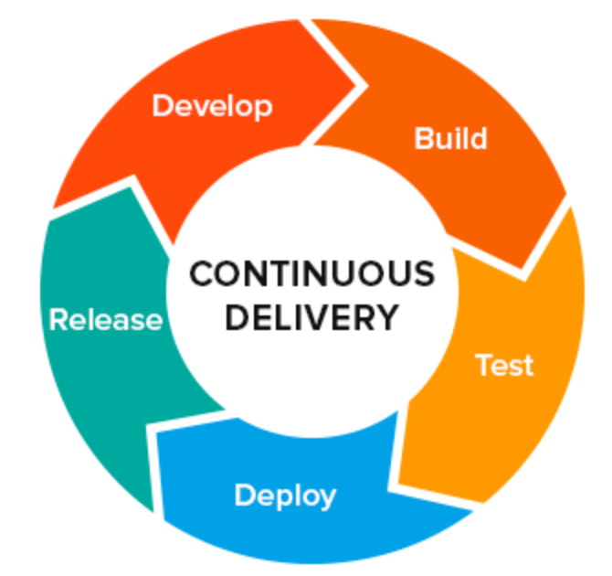

L'orchestrateur est la pièce centrale de la plateforme d'integration continue car
c'est le moteur qui va lancer succèssivement toutes les phases permettant le build
de l'application 
(recuperation du code dans Git, la compilation des sources, les test unitaires, les quality gates ...
pour finalement uploader le livrable war, ... dans le repo d'arctifact nexus.
Jenkins est le produit qui joue ce role d'orchestrateur chez PF aujourd'hui, lien pour accèder à
jenkins